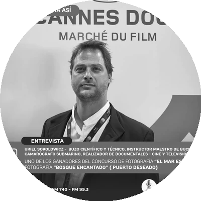

Un buzo en aguas patagónicas retrató el fondo del mar y ganó: Uriel Sokolowicz, premiado en el concurso "El Mar es Uno"
El camarógrafo submarino e instructor de buceo logró un 7.° puesto en la categoría Cámara con "Bosque encantado", imagen tomada en el Parque Interjurisdiccional Marino Isla Pingüino. Desde GLOBALpatagonia lo felicitamos.

"Bosque encantado" — Parque Interjurisdiccional Marino Isla Pingüino, Puerto Deseado, Santa Cruz. Foto: Uriel Sokolowicz.

Uriel Sokolowicz es buzo científico y técnico, instructor maestro de buceo, camarógrafo submarino y realizador de documentales para cine y televisión. Lleva años documentando los fondos del Mar Argentino con una mirada que combina rigor científico y sensibilidad artística. "Bosque encantado" es el resultado de esa síntesis: una imagen que parece sacada de otra dimensión y que existe a pocos metros bajo la superficie de la costa santacruceña.
El concurso nacional de fotografía "El Mar es Uno", organizado por el Ministerio de Seguridad de la Nación junto con la Administración de Parques Nacionales, convocó a fotógrafos de todo el país para poner en imágenes la riqueza natural y cultural del Mar Argentino y sus áreas protegidas marinas. La propuesta: construir una cultura oceánica en Argentina a través de las imágenes de quienes viven y trabajan junto al mar.
La convocatoria tuvo dos categorías —Cámara y Celular— y las diez mejores fotos de cada una integrarán una muestra itinerante y virtual que recorrerá el país. El jurado estuvo compuesto por el fotógrafo Diego Ortiz Mugica, Guillermo Díaz Cornejo (Jefe de Gabinete de Parques Nacionales) y la técnica Fernanda Menvielle.
Entre los cientos de participantes, Uriel Sokolowicz representó a la Patagonia austral con "Bosque encantado": una toma submarina en el Parque Interjurisdiccional Marino Isla Pingüino, frente a Puerto Deseado, que captura un bosque de macroalgas kelp con rayos de luz filtrándose desde la superficie. La imagen transmite silencio, profundidad y una vida exuberante que pocas personas tienen el privilegio de ver.
Las 20 fotos ganadoras


La muestra con las fotos ganadoras será itinerante y virtual, accesible para todo el país. Un reconocimiento merecido a quienes —desde la costa bonaerense hasta los canales fueguinos— eligieron al mar como protagonista.
Desde GLOBALpatagonia, medio de comunicación patagónico, le mandamos un abrazo y nuestras felicitaciones a Uriel Sokolowicz por este reconocimiento. Su trabajo con la cámara submarina es uno de los registros más valiosos que existe sobre los fondos del Mar Argentino en la Patagonia austral.